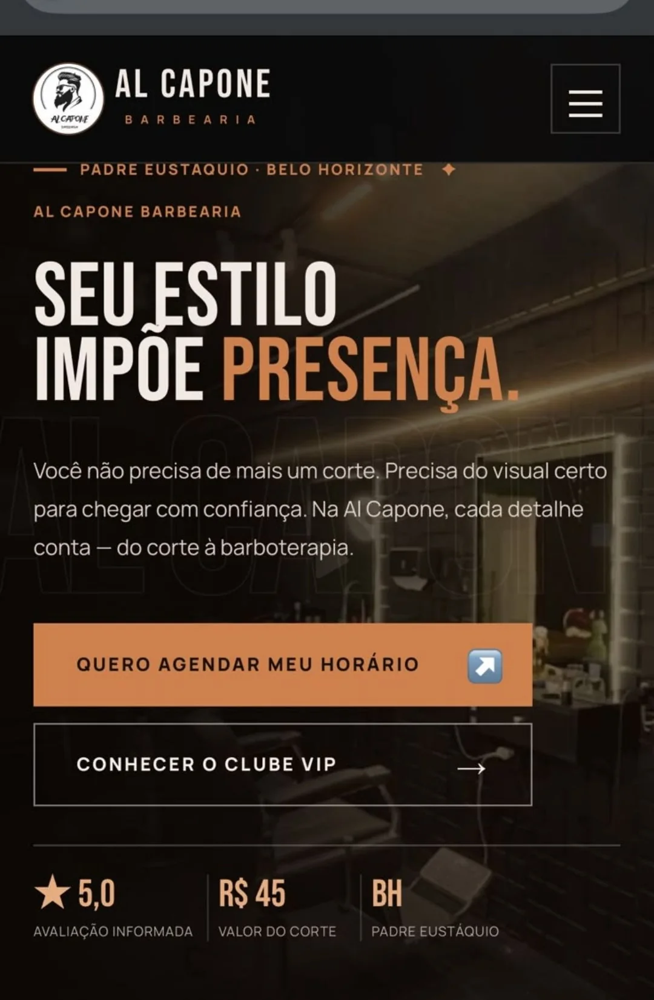

01 / APRESENTAÇÃO✧
01
Seu negócio em contexto.
Apresente sua identidade, o espaço, a equipe e os diferenciais. Mostre o que torna seu atendimento reconhecível.
- Sobre o negócio
- Ambiente e resultados
- Localização e contato
SITES E AGENDAMENTO PARA NEGÓCIOS DA BELEZA
Seu trabalho merece um endereço próprio na internet: um lugar para apresentar serviços, mostrar resultados e facilitar o próximo passo.
Para barbearias, salões, manicures, nail designers, studios e profissionais de estética.


Talvez encontre seu Instagram. Fotos de resultados, vídeos, destaques, preços em publicações antigas e um link para chamar no WhatsApp.
As redes sociais são importantes para manter o público por perto. Mas imagine alguém que recebeu uma indicação, gostou do seu trabalho e quer saber quais serviços você oferece, quanto custa e quando pode ser atendido.
Essa pessoa encontra tudo o que precisa ou precisa montar o quebra-cabeça entre posts, mensagens e respostas?
O site organiza o que hoje pode estar espalhado entre redes sociais, mensagens e links. Quem chega encontra uma apresentação pensada para conhecer seu trabalho e seguir para o agendamento.
Apresente sua identidade, o espaço, a equipe e os diferenciais. Mostre o que torna seu atendimento reconhecível.
Reúna procedimentos, descrições, valores, duração e opções de atendimento. O cliente consulta o que precisa com mais autonomia.
O visitante escolhe o serviço, seleciona o profissional quando aplicável, consulta a disponibilidade e confirma pelo navegador.
O site e o sistema podem trabalhar juntos para que a pessoa encontre, compreenda e consiga marcar o atendimento.
Um endereço próprio para compartilhar em redes sociais, mensagens, cartões digitais e resultados de busca.
Serviços, especialidades, preços, profissionais e informações organizados para reduzir dúvidas antes do contato.
Um caminho direto para consultar horários e confirmar o atendimento, sem depender de uma conversa para cada marcação.
A proposta é desenvolver o fluxo de acordo com a rotina do negócio. Domínio, hospedagem, manutenção e serviços externos podem ter custos próprios, apresentados no orçamento.
A Al Capone Barbearia precisava apresentar seus serviços e organizar os atendimentos em um único ambiente digital. O projeto reuniu um site institucional e um sistema próprio de agendamento, com uma área administrativa para acompanhar a agenda.
AS IMAGENS DESTA SEÇÃO PERTENCEM AO PROJETO AL CAPONE BARBEARIA.O cliente conhece a barbearia, consulta serviços e valores, escolhe o profissional, verifica a disponibilidade e confirma o atendimento. A equipe acompanha as reservas em um painel administrativo.
A Al Capone é uma referência de implementação. O visual, o conteúdo e as funcionalidades de cada novo projeto são definidos conforme o negócio atendido.
A Al Capone é um exemplo real de barbearia. Para outros segmentos, a estrutura nasce dos serviços, da equipe, da duração dos atendimentos e da rotina de cada profissional.
Cortes, barba, serviços combinados, profissionais e agenda por barbeiro.
Procedimentos, especialidades, equipe, duração e informações para clientes.
Técnicas, serviços, valores, opções de atendimento e disponibilidade.
Procedimentos, especialidades, profissionais e orientações pré-atendimento.
Apresentação de técnicas, resultados, serviços e horários de atendimento.
Um endereço próprio para apresentar o trabalho e facilitar os agendamentos.
O projeto começa pelo funcionamento real do negócio. A tecnologia deve se adaptar ao atendimento — não o contrário.
Conhecer serviços, equipe, horários, diferenciais e necessidades.
Organizar conteúdo, identidade visual e apresentação do site.
Planejar serviços, profissionais, horários e fluxo de agendamento.
Testar navegação e agendamento antes de colocar o projeto no ar.
Respostas diretas sobre o site, o sistema de agendamento e os custos envolvidos.
Ainda tem dúvidas? Vamos conversarNão. O agendamento pode funcionar pelo navegador do celular ou computador. O cliente acessa um link do negócio e realiza o processo sem instalar um aplicativo.
A proposta é desenvolver um sistema próprio, sem mensalidade de plataforma para utilizar o agendamento. Domínio, hospedagem, manutenção e serviços adicionais podem ter custos próprios, informados no orçamento.
No projeto Al Capone, o sistema registra os agendamentos e permite à equipe gerenciar bloqueios e disponibilidade. Em cada novo projeto, as regras são definidas conforme a rotina do negócio.
Sim. O fluxo pode ser organizado por profissional, serviço, duração e disponibilidade, conforme o escopo definido para cada negócio.
Não. O site complementa esses canais. Ele organiza informações, apresenta os serviços e oferece um endereço próprio para compartilhar.
Não. A estrutura técnica e o conteúdo ajudam buscadores a entenderem o negócio, mas não garantem indexação, posição ou citações em sistemas de inteligência artificial.
Sim. A estrutura pode ser adaptada para os procedimentos, a duração dos atendimentos, os profissionais e a rotina de cada negócio.
O orçamento depende da estrutura do site, da quantidade de serviços e profissionais e das funcionalidades necessárias. O escopo e os custos recorrentes, quando houver, são apresentados antes do desenvolvimento.
Conte como funciona seu atendimento, quais serviços oferece e o que gostaria de organizar. A gente começa por uma necessidade concreta e define uma solução adequada à sua rotina.
Vamos conversar sobre seu projetoUsamos apenas armazenamento local para lembrar sua rota e suas preferências. Sem cookies de publicidade. O formulário de contato envia os dados pelo serviço de processamento configurado.
Ao enviar o formulário, você compartilha nome, e-mail (se informado), objetivo e mensagem. As informações são processadas pelo serviço de formulário configurado e encaminhadas ao e-mail indicado. Para dúvidas ou solicitações relacionadas aos seus dados: dell.soares@gmail.com. Você pode reabrir este aviso pelo rodapé.